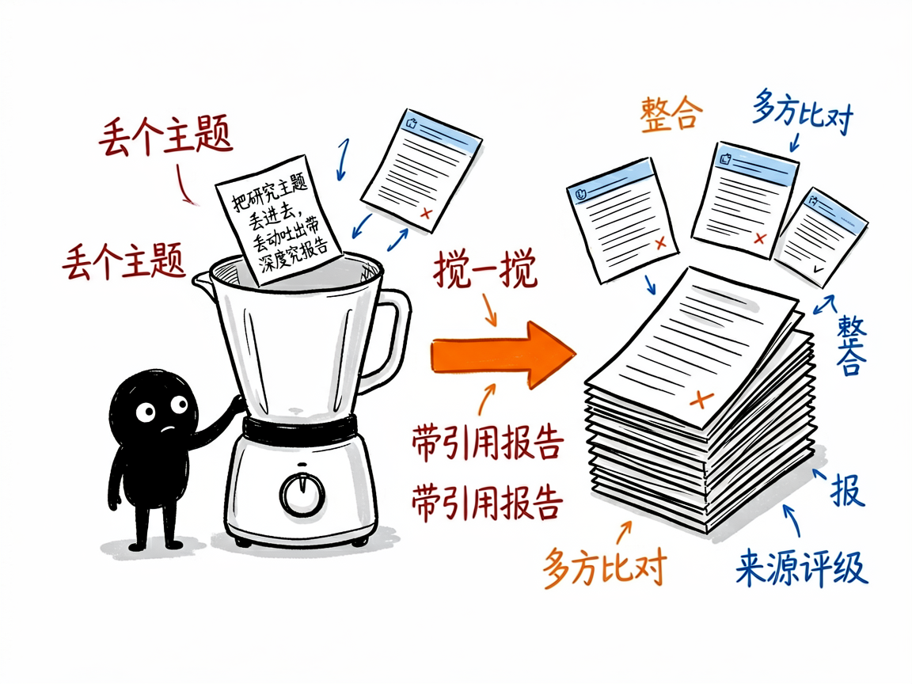
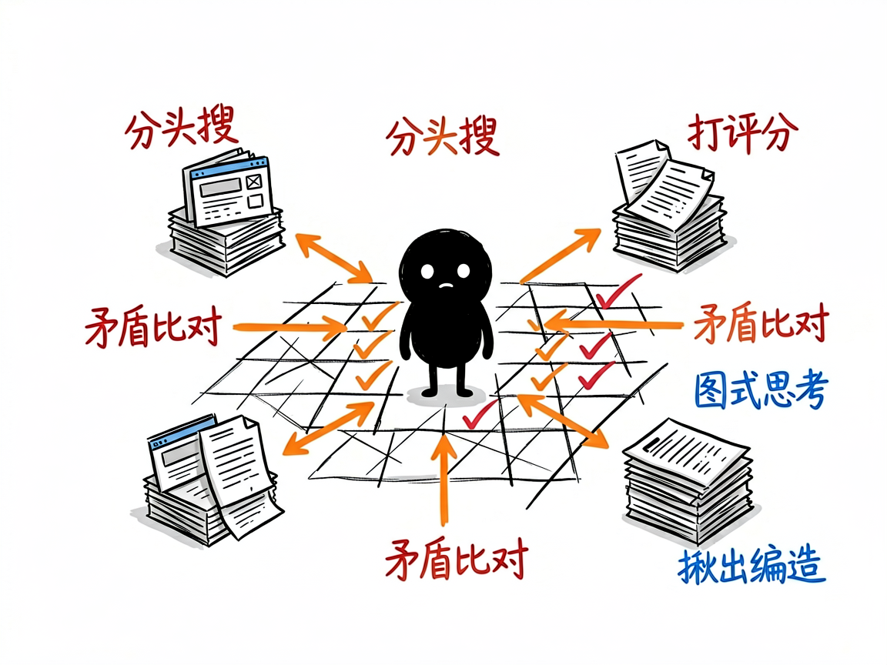

丢个主题进去，多个 AI 研究员并行搜索、交叉比对，吐出一份带完整引用的结构化研究报告文件夹。
搜三小时，收藏夹塞满，拼出来的东西自己都没底
老板甩来一句"研究一下 AI 在医疗行业的现状"，普通做法是开浏览器搜到天黑。deep-research-agent 真去网上搜、多方比对、再整理成可交差的文档：多个研究员并行，图式思考规划路径，矛盾来源分析可信度，每个数据标来源和 A-E 评级。
深度研究报告生成器 的六大能力
先确认研究范围、格式、时间段和来源要求，不一上来瞎搜
同时派出多个 AI 研究员分头查资料，效率倍增
像下棋一样规划研究路径、给每条线索打分
不同来源说法矛盾时，分析谁更可信，共识与分歧都摆出
每个数据标来源并按权威度评级，附编造数据检测
执行摘要、全文、关键数据、参考文献、来源质量表、引用验证报告
小黑手绘风格插图


从输入到产出，一步到位
快速开始
git clone https://github.com/liangdabiao/deep-research-agent-skill.git # 放入 ~/.workbuddy/skills/ 或 ~/.claude/skills/
对 AI 说：帮我深度研究一下 2025 年 AI Agent 的产业趋势
确认范围、格式、时间范围与来源要求
获得包含摘要、全文、文献与验证报告的完整文件夹
现代化技术组合
关于 深度研究报告生成器 的常见疑问